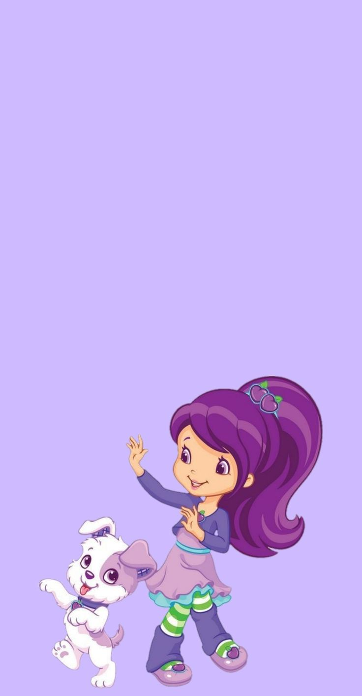

-
Moranguinho com Mostarda e Rocambole

Personagem principal do desenho animado: Moranguinho, cujo nome é o da personagem. Moranguinho é a melhor amiga de todos. Quando não está trabalhando em sua Cafeteria na Cidade das Frutinhas, ela recebe seus amigos para reuniões e lhes oferece ajuda e conselhos. Seu otimismo é contagioso e ela sempre vê grandes possibilidades em tudo e em todos!
ATK/ 2800 DEF/ 2500 -
Gotinha de limão e sua cadela, Henna
Segunda personagem favorita de muitos. Dona do Salão de Limão, ela é uma especialista com o pente, secador e maquiagem. É lá onde as meninas, os animaizinhos de estimação e os amigos do jardim incrementam o visual. Todos gostam de ficar perto dela, que adora manter a turminha atualizada sobre os “cuidados com a beleza” na Cidade das Frutinhas.
ATK/ 3200 DEF/ 2000 -
Laranjinha com sua cadela, Marmelada

Uma personagem cheia de vida! Enérgica e animada, Laranjinha está sempre dando dicas sobre uma alimentação saudável para as suas amiguinhas. Dona do Mercado Laranja, ela sabe da importância de se alimentar direitinho. Ela adora doces, mas também é fã de frutas, legumes e verduras.
ATK/ 2600 DEF/ 2300 -
Cerejinha e sua cadela, Canelinha
Cerejinha é a mais famosa moradora da Cidade das Frutinhas! Quando a cantora pop star está fora dos palcos, ela conta com todo o seu charme e carisma para atuar como a professora de música favorita da cidade e ser uma amiga fabulosa de todos!
ATK/ 3500 DEF/ 3000 -
Amora Linda e seu bixinho, Scouty
Dona da livraria da Cidade das Frutinhas, a Amora Livros, ela é super esperta e interessada em aprender cada vez mais. O seu passatempo favorito é ler livros de todos os tipos, assim, ela sempre está bem informada e pode contar diferentes histórias para as suas amigas.
ATK/ 2400 DEF/ 2600 -
Cachinho de Framboesa e sua cadela, Chiffon
A superestilosa Framboesa adora dar dicas de moda para todas as garotas da Cidade das Frutinhas. Ela também é dona da Nova Moda, uma boutique de roupas super fashion e descolada. Suas amigas podem contar com ela para tudo, inclusive, para montar os melhores looks da cidade.
ATK/ 3000 DEF/ 2800 -
Ameixinha e Malhadinho, seu cachorro
Sempre animada, a Ameixinha parece ouvir um ritmo alegre de dança onde quer que ela vá. Dona do Estúdio da Dança na Cidade das Frutinhas, ela é uma ótima dançarina, ensinando todos os ritmos para as meninas, desde hip-hop até balé. Aprenda a dançar com ela e você irá arrasar nas festinhas.
ATK/ 2900 DEF/ 2100